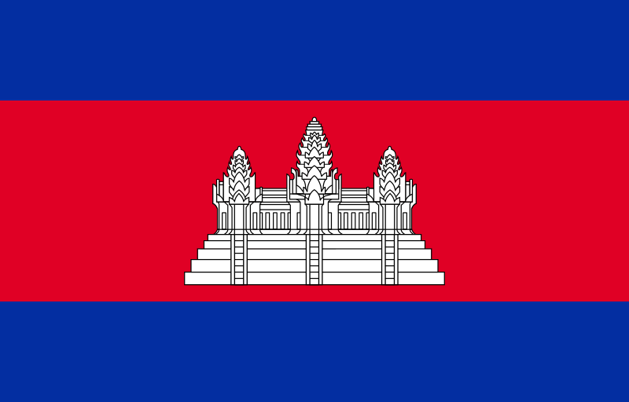

Флаг Камбоджи
Камбоджа и немного о стране
Короле́вство Камбо́джа — государство в Юго-Восточной Азии, на юге полуострова Индокитай, со столицей Пномпень. Площадь — 181 тыс. км².
Население — более 16 миллионов человек (16 926 984 по данным за 2020 г.); свыше 97 % — кхмеры.
С 1993 года — конституционная монархия, глава государства — король.
Законодательный орган — двухпалатный парламент (Национальная ассамблея и Сенат).
На востоке граничит с Вьетнамом, на севере — с Лаосом, на северо-западе — с Таиландом.
Климат
Климат Камбоджи, так же как и климат других стран юго-восточной Азии, сильно зависит от муссонов.
Температуры на всей территории центральной равнинной части страны довольно схожи и характеризуются лишь сравнительно небольшими вариациями от среднегодовой температуры 25 °С.
Максимальные температуры — выше 32 °С, хотя сразу перед началом сезона дождей они зачастую превышают 38 °С. Минимальные температуры редко опускаются ниже 10 °С. Самый холодный месяц — январь, а самый тёплый — апрель.
Тропические циклоны, часто обрушивающиеся на побережье Вьетнама, крайне редко проникают на территорию Камбоджи.
Почему именно Камбоджа
Я очень люблю теплый климат, именно поэтому мне очень нравится Камбоджа. Также в Камбодже очень дешево, намного дешевле чем в Украине. Неверотяно вкусная еда и цены в ресторанах вкусные в равной степени.
Легко с орендой скутера, мотоцикла, автомобиля.
Можно очень дешево снять жилье, например мои друзья сниимаю частный дом за 200 долларов в месяц.
Лично для меня дополнительные плюсы это - легализирован офлайн покер.